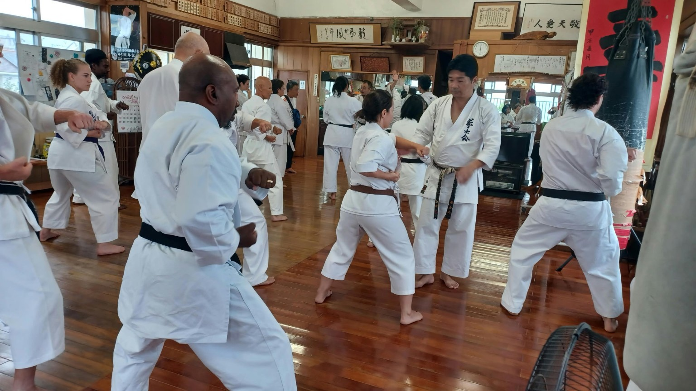
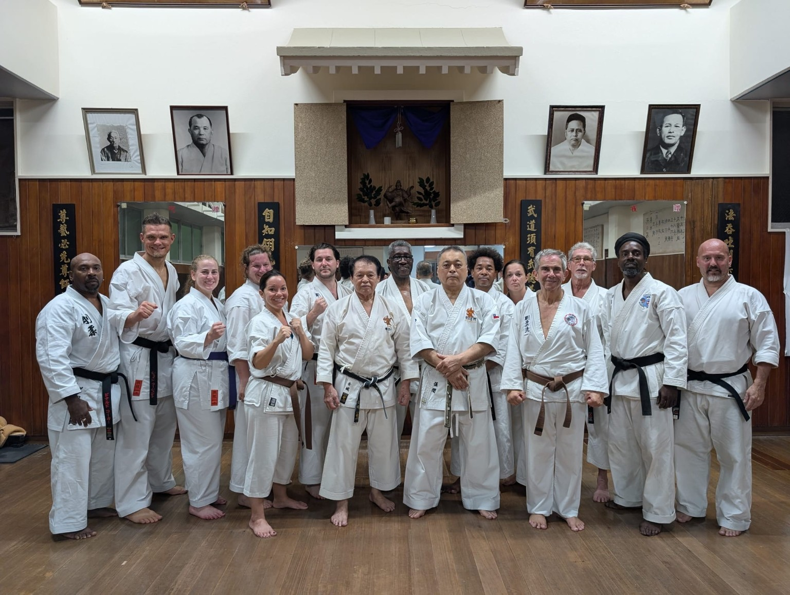

1995
Taekwondo begins
Robyn began taekwondo as a teenager and found a practice she would keep returning to.
Practice · Community · Growth
For Robyn, martial arts are more than techniques. They are a lifelong practice, an extended family, and a way to help other people grow.
Get to know Robyn
A practice that keeps unfolding
1995
Robyn began taekwondo as a teenager and found a practice she would keep returning to.
2021
She began studying Okinawan Goju-Ryu karate, adding another style and community to her training.
Today
Robyn is learning sword and working toward her black belt in karate.

More than the class
Training has brought Robyn confidence, purpose, and people she considers family. As a student, teacher, and referee, she aims to make the experience better for others, too.
Explore her training